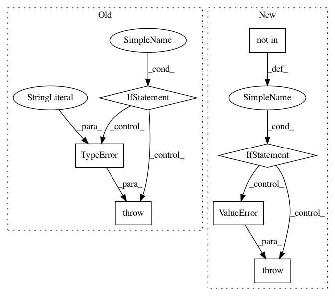

c6d616a9a0fbefefeddb42cd3ee3f3c01009d1a9,nilearn/plotting/img_plotting.py,,plot_prob_atlas,#Any#Any#Any#Any#Any#Any#Any#Any#Any#Any#Any#Any#Any#Any#Any#Any#Any#Any#Any#,645
Before Change
n_maps = maps_img.shape[3]
_view_type = set(("auto", "contours", "filled_contours", "continuous"))
if isinstance(view_type, _basestring):
if view_type not in _view_type:
raise TypeError("view_type option should be given "
"either as a "contours" or "filled_contours" "
"or "continuous" ")
else:
raise TypeError("view_type option should be "
"either as a "contours" or "filled_contours" "
"or "continuous" but you have given %s "
% type(view_type))
cmap = plt.cm.get_cmap(cmap)
// Build a custom colormap for displaying contours
color_list = cmap(np.linspace(0, 1, n_maps))
After Change
n_maps = maps_img.shape[3]
allowed_view_types = list(("auto", "contours", "filled_contours", "continuous"))
if not isinstance(view_type, _basestring) or \
view_type not in allowed_view_types:
message = ("view_type option should be given "
"either of these {0} ").format(allowed_view_types)
raise ValueError(message)
cmap = plt.cm.get_cmap(cmap)
// Build a custom colormap for displaying contours
color_list = cmap(np.linspace(0, 1, n_maps))
In pattern: SUPERPATTERN
Frequency: 3
Non-data size: 7
Instances
Project Name: nilearn/nilearn
Commit Name: c6d616a9a0fbefefeddb42cd3ee3f3c01009d1a9
Time: 2015-07-16
Author: dkamalakarreddy@gmail.com
File Name: nilearn/plotting/img_plotting.py
Class Name:
Method Name: plot_prob_atlas
Project Name: nipy/dipy
Commit Name: 73c40d0d9ab37df1be31f06630e3371eed26a1a8
Time: 2019-12-19
Author: francois.m.rheault@usherbrooke
File Name: dipy/io/stateful_tractogram.py
Class Name: StatefulTractogram
Method Name: __init__
Project Name: albu/albumentations
Commit Name: 7098243f6055909d307b54743402d389a076215e
Time: 2018-07-24
Author: me@arseny.info
File Name: albumentations/augmentations/functional.py
Class Name:
Method Name: jpeg_compression